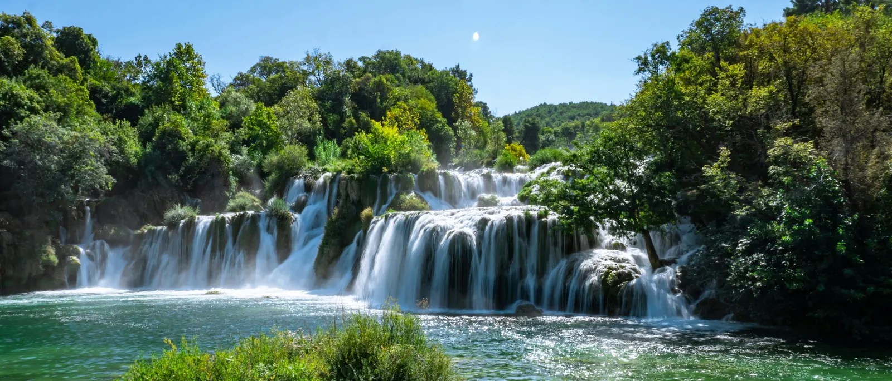

Fosser, Uten Den Lange Bilturen
Krka nasjonalpark er bygget rundt elven Krka, som fosser frem gjennom en rekke kalktuff-fosser, der den største og mest kjente er Skradinski Buk — et bredt fosseteppe som nås via gangbroer i tre som slynger seg gjennom skogen og langs vannet. Med mindre enn halvparten av kjøreavstanden til Plitvicesjøene blir Krka en merkbart mer avslappet dag: mindre tid i bilen, mer tid faktisk i parken, og likevel hjemme samme ettermiddag med krefter igjen. Elvebyen Skradin, der de fleste besøk begynner, er et fint stopp i seg selv — en liten havneby bygget i stein, verdt en rolig kaffe før eller etter turen. For besøkende med dårlig tid, eller for dem som allerede har tatt den lengre turen til Plitvice, er Krka gjennomgående det enklere, mer fleksible valget — uten å gi avkall på opplevelsen av «kroatiske fosser» som trekker besøkende hit.
Dette Er Inkludert
- Privat kjøretøy bare for din gruppe — ingen delt shuttle
- Engelsktalende sjåfør hele dagen
- Henting og avsetting ved hotell eller overnattingssted i Split
- Alt drivstoff, bompenger og parkering ved parken
- Fleksibel tid i parken — sjåføren venter
- Flaskevann til turen
Ikke inkludert: Inngangsbilletter til Krka nasjonalpark og den valgfrie båtturen til øya Visovac, begge kjøpes separat i parken.
Bestill Denne Turen
Still et Spørsmål på WhatsAppFast pris for hele dagen · sjåføren venter ved parken · fleksibel hentetid.
En Typisk Dag i Krka
-
08:30 – 09:00
Henting i Split
En senere start enn til Plitvice er behagelig her, med tanke på den kortere turen — sjåføren henter deg ved hotellet eller leiligheten din.
-
~10:15
Ankomst nær Skradin
Sjåføren setter deg av ved inngangen til parken og bekrefter en returtid. Inngangsbilletter kjøpes ved porten.
-
10:15 – 14:00
Skradinski Buk & Turstier
Følg gangbroene langs og over fossene, med tid til den valgfrie båtturen til øya Visovac hvis du vil legge den til.
-
~14:00
Lunsj i Skradin
Elvebyen er et fint lunsjstopp før hjemturen — flere restauranter ligger rett ved havnen.
-
15:30
Retur til Split
Sjåføren venter til avtalt tid for den kortere turen tilbake til Split.
-
~16:45
Avsetting i Split
Tilbake ved overnattingsstedet sent på ettermiddagen — med mye av kvelden igjen.
Dette er en foreslått plan — avreisetid, lunsjstopp og tid i parken er fleksibelt og avtales direkte med sjåføren.
Vanlige Spørsmål
Hvor lang tid tar dagsturen til Krka nasjonalpark?
Hele turen tur-retur fra Split tar rundt 8–10 timer, inkludert 3–4 timer til å utforske parken. Krka ligger nærmere Split enn Plitvicesjøene, noe som gjør dagen litt mer avslappet.
Hva er inkludert i prisen?
Ditt private kjøretøy, en engelsktalende sjåfør, alt drivstoff og alle bompenger, samt henting og avsetting ved hotell/overnattingssted i Split er inkludert. Inngangsbilletter til Krka nasjonalpark og den valgfrie båtturen til øya Visovac kjøpes separat i parken.
Kan man bade i Krka nasjonalpark?
Bading ved Skradinski Buk har ikke vært tillatt siden 2021, som en del av parkens vernearbeid. Du kan fortsatt komme nær fossene via gangbroene i tre, og bading er fortsatt mulig noen andre steder langs elven Krka utenfor det vernede området.
Er Krka et godt alternativ til Plitvicesjøene?
Krka ligger nærmere Split, er generelt roligere og dreier seg om ett spektakulært fossesystem i stedet for en kjede av innsjøer — et godt valg hvis du vil ha en kortere dag eller allerede har besøkt Plitvice. Mange gjester som rekker begge parkene, sier at de to føles virkelig forskjellige snarere enn som en gjentakelse.
Er båtturen til øya Visovac inkludert?
Båtturen til øya Visovac er valgfri og bestilles separat i parken, vanligvis med avgang fra Skradin. Gi sjåføren beskjed på forhånd hvis du vil ha tid satt av til det i løpet av dagen.